Linux Kernel Install and Upgrade (Kernel Install)
Linux Kernel Install and Upgrade - 2
Kernel Kurulumu ve Upgrade
İlk adımda Virtual Box üzerine Ubuntu kurulumunu yapmıştık sıra Kernel i makinemize kurmaya geldi
Önce makinede kurulu olan kernel sürümünü uname -r komutu ile öğreniyoruz. 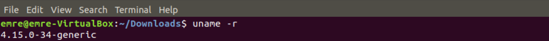
İndirdiğimiz kernel dosyasını /usr/src altına taşıyoruz. Normal kullanıcı olarak denediğimiz için erişim hatası aldık. 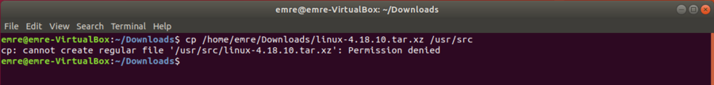
sudo komutunu satır başına ekleyerek isteği tekrarlıyoruz. Bu sefer gerekli izin için bizden şifre talep ediyor. Şifreyi girdikten işlemin gerçekleştiğine dair diğer komut alma satırı geliyor. 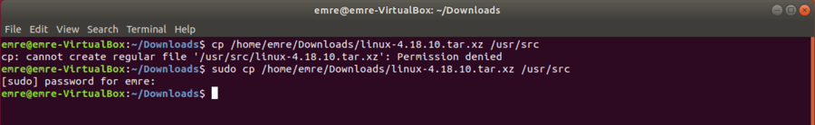
Hedef olarak gösterdiğimiz dizine gidiyoruz ve ls komutu ile kontrol ediyoruz. Ve sonuç başarılı. 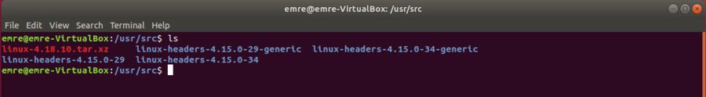
Sonrasında arşiv dosyasını çıkartma işlemini yapıyoruz. Sistem dosyalarının bulunduğu bir dizinde işlem yaptığımız için her türlü duruma karşı sudo komutunu ekleyerek arşivden çıkarma işlemini yapıyoruz. 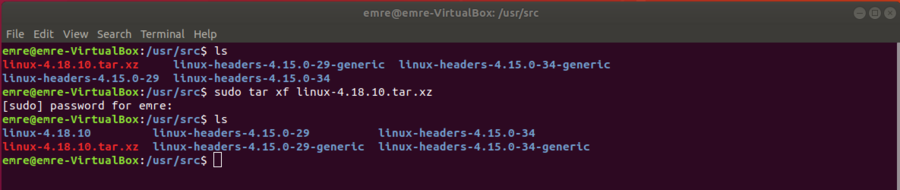
İşlemin kontrolü için içeriği dizin içeriğini ls ile listeleyip kontrol ediyoruz. Ve sonuç başarılı. Kernel dosyalarının bulunduğu dizine giriyoruz. 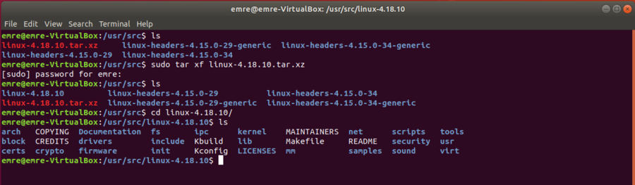
Kernelin konfigurasyon ayarları için make menuconfig yazıyoruz. Fakat terminal bize eksik paketler bulunduğunu söyleyerek uyarı da bulunuyor. 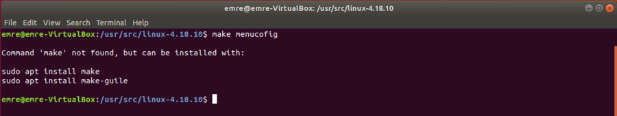
sudo apt install make ile make paketinin kurulumunu yapıyoruz. 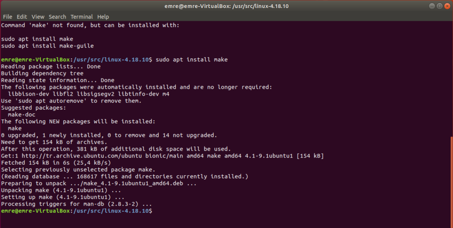
sudo apt install make-guile ile make-guile paketinin kurulumunu yapıyoruz. 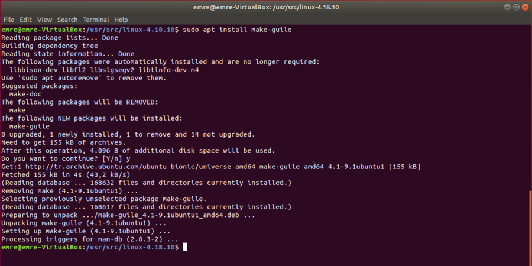
Tekrar make menuconfig diyoruz. Terminal gcc paketinin eksikliği uyarısını verdi. 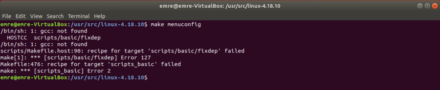
sudo apt install gcc diyerek gcc paketinin yüklemesini yapıyoruz. 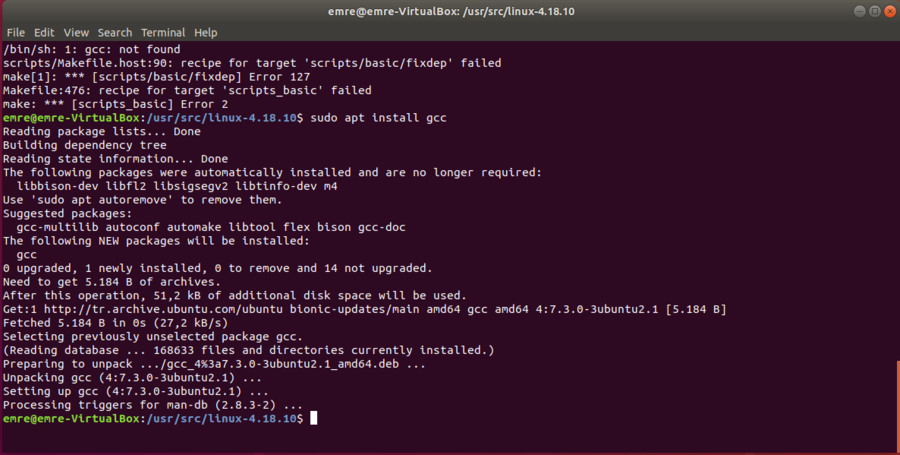
Yeniden make menuconfig dedikten sonra terminal bu sefer yetki ile bir sorun olduğunu söylüyor. 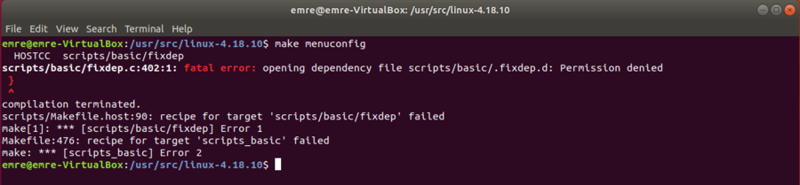
Biz de make menuconfig komutunun başına sudo ekleyerek komutu yeniden çalıştırıyoruz. Terminal bu sefer libncurses-dev paketinin eksik olduğunu söylüyor. 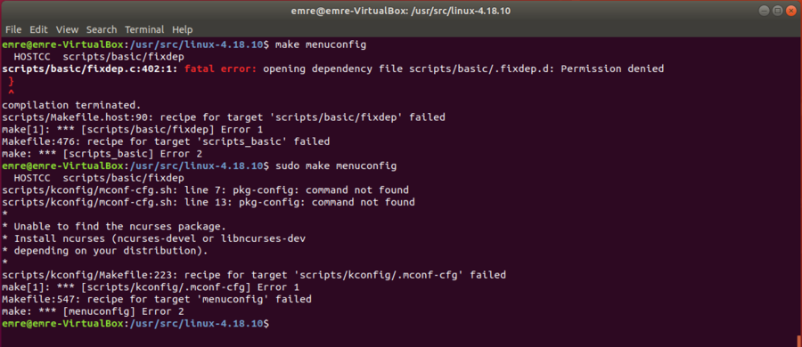
sudo apt install libncurses-dev diyerek gerekli paketi yüklüyoruz. 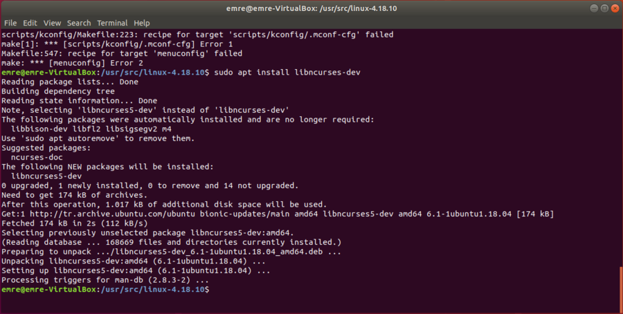
sudo make menuconfig komutunu tekrar çalıştırdığımızda terminal bison paketinin eksik olduğunu söylüyor. 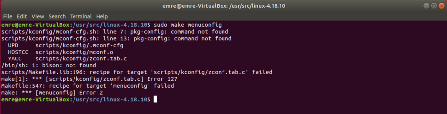
sudo apt install bison diyerek gerekli paketi yüklüyoruz. 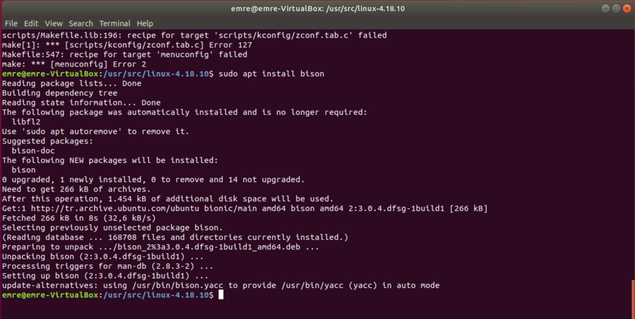
sudo make menuconfig tekrar çalıştırıldığında ise terminal flex paketinin eksik olduğunu söylüyor. 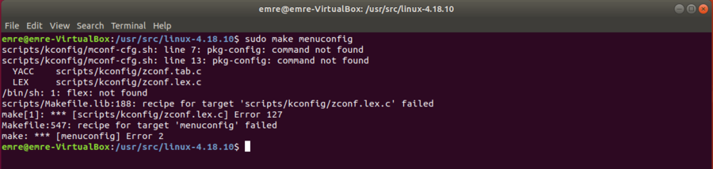
sudo apt install flex diyerek paketi yüklüyoruz. Bu noktada bazı paket kurulumları sırasında terminal bize Y/n diye sorarak paketi yükleyip yüklememek istemediğimizi soruyor. Y diyerek kurulumu onaylıyoruz. 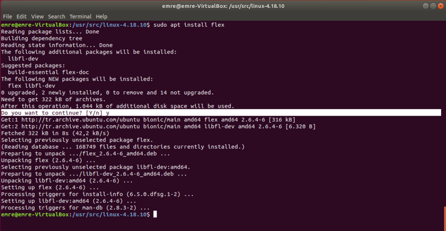
Ve başarılı bir şekilde konfigürasyon ekranı geldi. Gerekli ayarları yapıp kaydedip çıkabilirsiniz. Ben herhangi bir değişiklik yapmadan sağ ok tuşu ile Exit seçerek çıkış yapıyoruz. 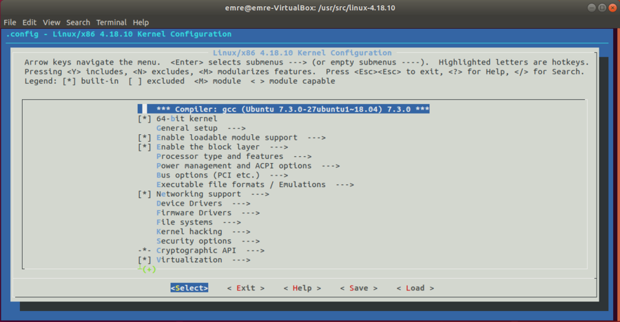
Gelen ekranında değişiklikleri kaydedip isteyip istemediğimiz soruluyor. Yes diyerek terminal ekranına dönüş yapıyoruz. 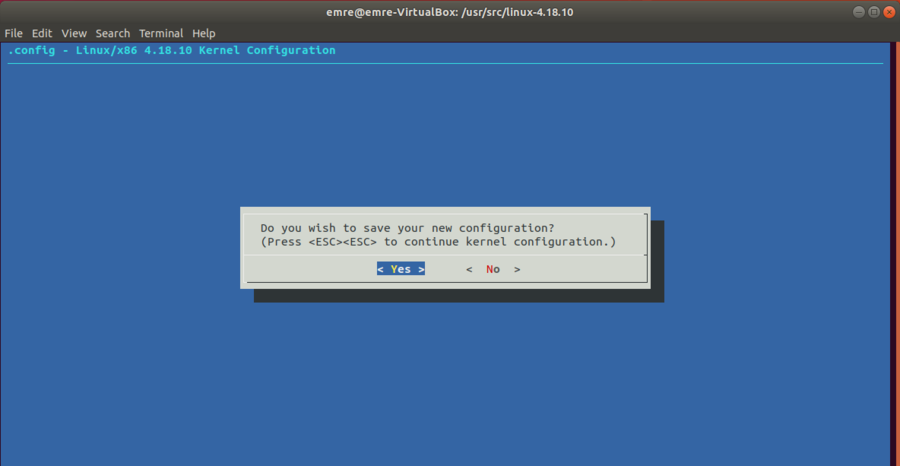
Başarılı bir şekilde terminale dönüş yaptık. Varsa yapılan değişikliler burada görülecektir. 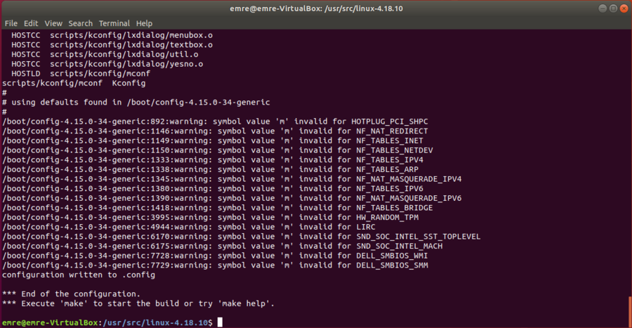
Sıra kernel için gerekli imaj dosyasını oluşturmaya geldi. Yine erişim sorunu yaşamamak için sudo make bzImage komutunu çalıştırıyoruz. Fakat terminal bize ssl ile ilgili bir hata olduğunu söylüyor. Hangi paket istenildiği net olarak belirtilmediği için internette yapılacak bir araştırma ile gerekli komut bulunuyor. 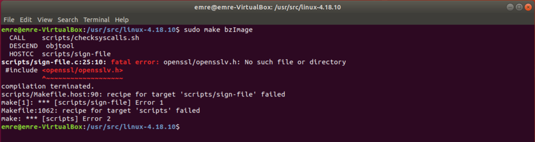
sudo apt install libssl-dev diyerek ihtiyacımız olan paketi yüklüyoruz. 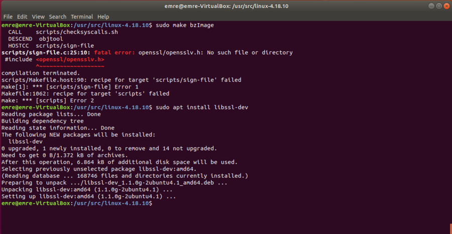
Yeniden sudo make bzImage diyerek imaj dosyasını hazırlamaya başlıyoruz. Makinenin özelliğine göre yarım saat ile 1 saat arasında sürebilecek bir özellik. 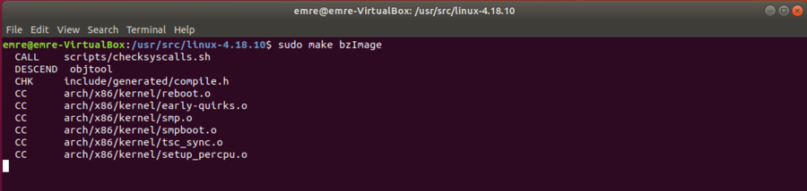
Başarılı bir şekilde imaj dosyasının oluştuğunu söylüyor terminal. 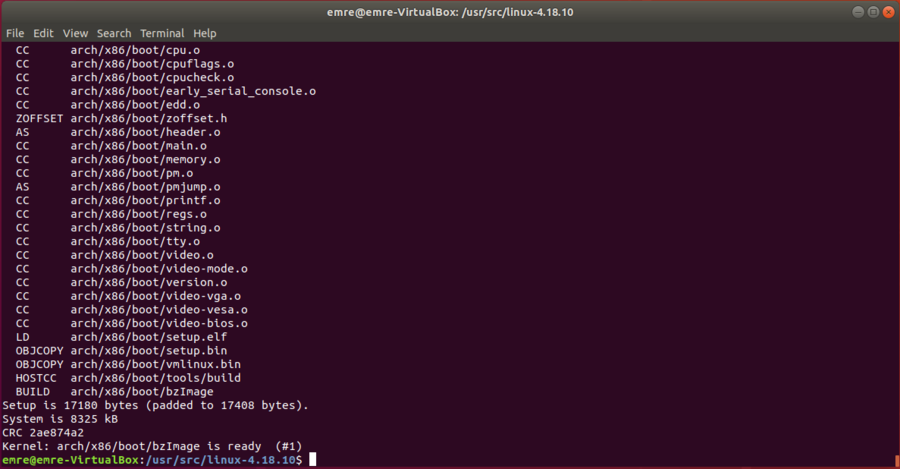
Belirtilen dizine giderek kontrol ediyoruz ve sonucun doğruluğunu teyit ediyoruz. 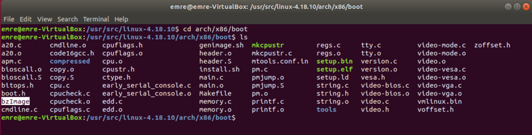
Sırada kerneli derlemek var. Gerekli yetkiler için sudo make modules diyerek işleme başlıyoruz. Fakat bulunduğumuz dizine dikkat etmekte fayda var. Yoksa umulmadık sonuçlar alabiliriz. Kernel dosyasının ana dizinine dönüp (bir üst dizine geçmek için cd .. komutunu kullanıyoruz.) sudo make modules komutunu çalıştırıyoruz. Çalışılan makinenin özelliklerine göre 2 – 3 saati bulabilecek bir özellik olduğunu bildirmekte fayda var. 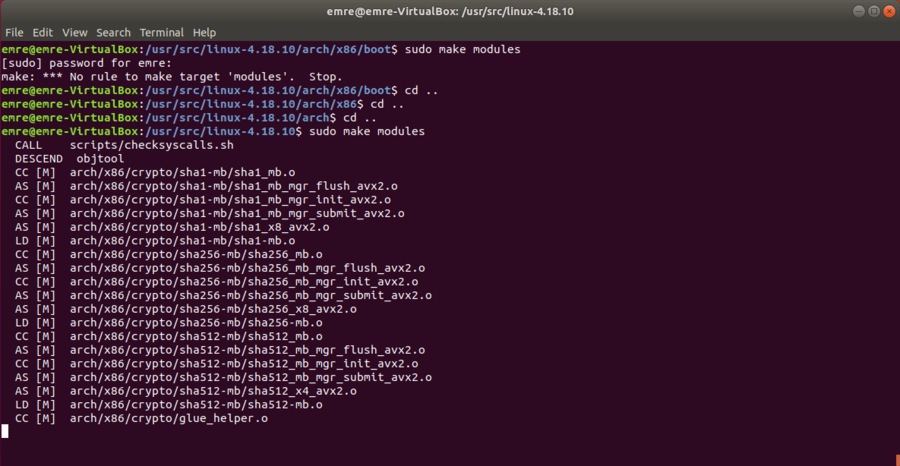
Ve başarılı bir şekilde derleme gerçekleşti. 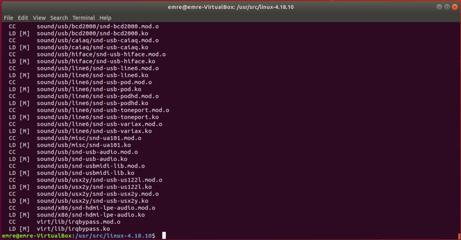
Derlemesini yaptığımız modüllerin yükleme işlemini sudo make modules_install komutu ile gerçekleştiriyoruz. 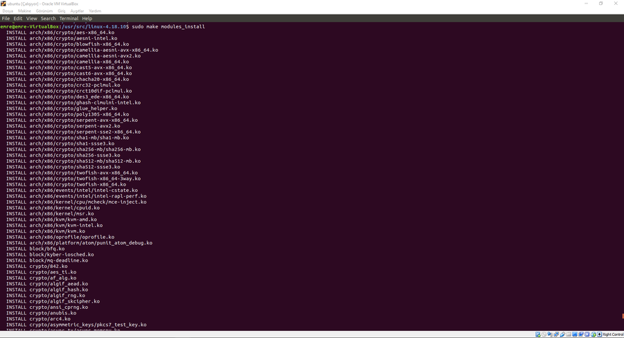
Modullerin yükleme işlemi tamamlandı. 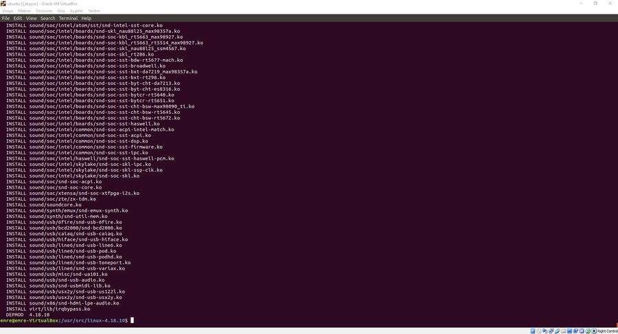
Artık makinemiz yeni kernelin yüklenmesine hazır. sudo make install diyerek kurulumu başlatıyoruz. Bu noktada terminal birtakım paketlerin eksik olduğuna dair uyarı verdi. Fakat yükleme işlemine engel bir durum olmadığı için yükleme devam ettiriliyor. İstenirse Ctrl + C kombinasyonu ile yükleme (o an devam herhangi bir işlem de olabilir) durdurulup eksik paketlerin yüklemesi yapılabilir. 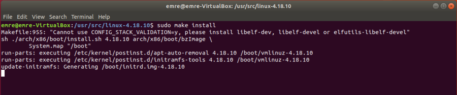
Yeni kernelin kurulumu tamamlandı. 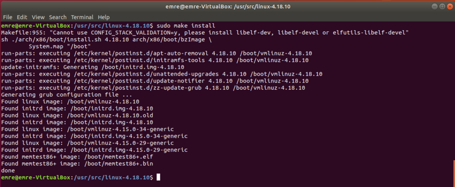
Kernelin yüklenip yüklenmediğine bakmak için ilk başta kullandığımız uname -r komutunu kullanıyoruz. Fakat sürüm hala eskiyi gösterdiği için sistemi yeniden başlatıp öyle kontrol etmekte fayda var. reboot komutu ile yeniden başlatıyoruz. 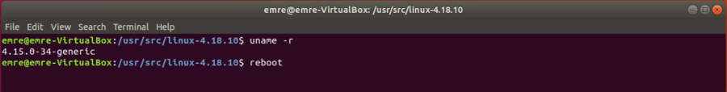
Yeniden başlatma sırasında sistem Kernel Panic hatası verdi. Hata açıklamasında Out of memory ibaresi hatanın sebebini açıklıyor. İnternette yapılacak ufak bir arama ile düşündüğümüz sebebin ihtimalinin yüksek olduğunu görüyoruz. İlk kurulumda sanal makineye verdiğimiz 2 Gb RAM az gelmiş olacak ki böyle hata aldık. 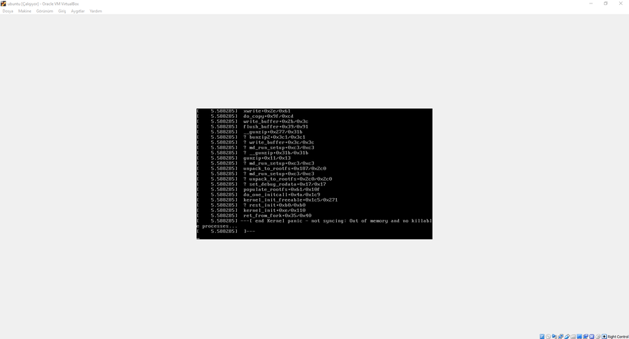
Makineyi tamamen kapatıyoruz. 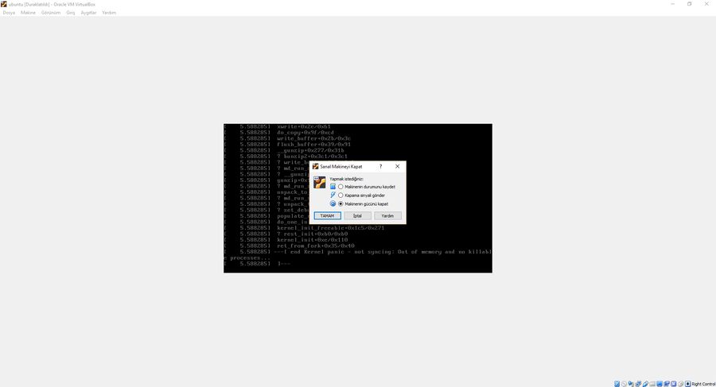
Ayarlar kısmında sanal makineye verdiğimiz RAM miktarını 2 katına yani 4 GB ye çekiyoruz. Not: Eğer bu işlemi siz de sanal makinede yapıyorsanız ve kullandığınız bilgisayarda yeteri kadar RAM yoksa bu adım sanal makinenin ve bilgisayarınızın performansını etkileyebilir. 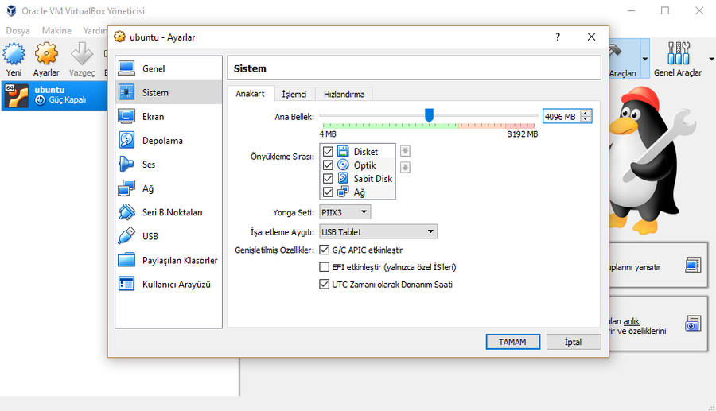
Gerekli ayarlamayı yaptıktan sonra sanal makinemizi tekrar başlatıyoruz. Açılış ekranında karşımıza gelecek ekrandan Advanced Options for Ubuntu seçeneğini seçtiğimizde karşımıza makinede bulunan kernel sürümleri hakkında bilgi ekranı geliyor. Ve bizim yüklediğimiz 4.18.10 sürümü de listeye eklenmiş. 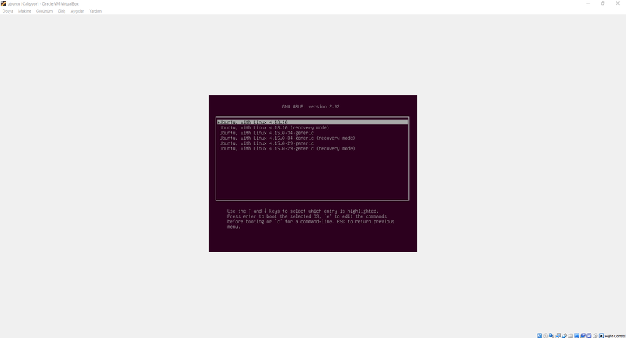
Ve işletim sistemimiz açıldı. 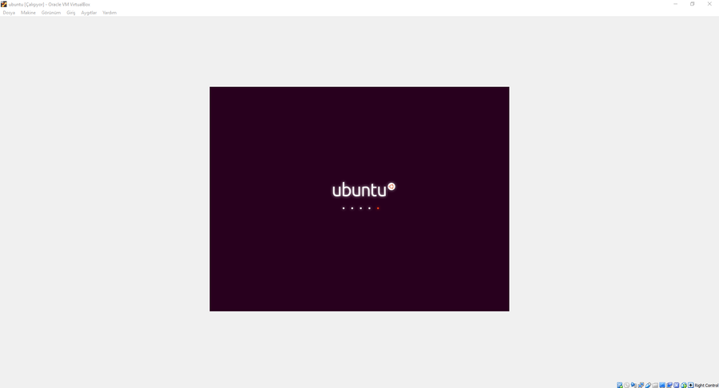
Şimdi ise yaptıklarımızın karşılığını görme zamanı. Yeniden uname -r komutunu kullanarak sürüm kontrolü yapıyoruz. Ve sonuç istediğimiz gibi. 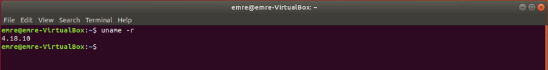
Kernel Kurulumu ve Upgrade i başarılı bir şekilde sistemimize yüklendi. Artık kernel üzerinde kendi modüllerimizi geliştirmeye başlayabiiliriz. Fakat uyarmam gereken bir konu var. Kernel upgrade işlemini varsa halihazırda kullandığınız Ubuntu veya başka bir linux dağıtımı üzerinde yaparken adımları ve kaarşınıza çıkan hataları dikkatli bir şekilde inceleyip ona göre çözüm bulmanız. Yoksa benim gibi eldeki Ubuntu’ya zarar verip kullanılmaz hale getirmeyin :).
Kaynakça: